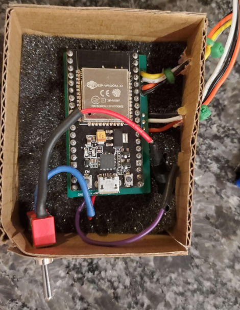
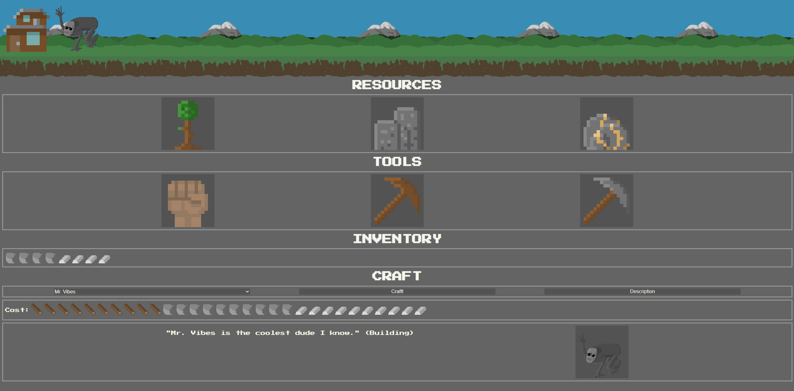

From June 2021 to September 2021 I was an intern at Amazon Web Services for the Web Application Firewall (WAF) team
which focuses on providing users with cybersecurity solutions for their applications. I was tasked with reworking
the customer log delivery system for the team. I independently researched, proposed, implemented, tested, and deployed the
project to finish. Using primarily Java and Ruby, I was able to improve the functionality of the REST APIs that the team used
to power their costumer logging system. Upon the delivery of the project log throttling rates were reduced,
log delivery method options for users were tripled, and operating costs were lowered.
DubHacks 2020 - Wampus
Java, Git, Data Structures, Algorithms, Hackathon, Teamwork, Web Scraping, UI
During the DubHacks 2020 hackathon, I partnered up with another student to design an app for movie recommendations.
We made an app called "Wampus" which prompts the user for a movie genre to make movie suggestions for. Depending on if
the user "thumbs ups" or "thumb downs" a shown movie, either more similar or less similar movies will be suggested.
Data is gathered from IMDB using a webscraper powered by jsoup. The "next movie algorithm" is based on heap sort and runs
in O(log(n)).
The project was designed and implemented under a strict 24-hour time limit. My coding partner and I worked togther using GitHub
to collaborate simultaneously on the project.
A demo video showcasing the functionality of Wampus

A Safe Stove device in a prototype case. Includes PCB, sensor connections, and an on/off switch.
Safe Stove was my first of two capstone projects at the University of Washington. My team decided to design an Internet of Things (IoT) device which
would be attached above a stove and would send temperature data and alerts to a companion app on the user's mobile device. Safe Stove would send an alert,
after a customized time duration, if the stove top was turned on and there was no activity in the kitchen. I was responsible for integrating the device with
AWS for data storage and processing. The device uses Wi-Fi to to send tempurate and motion data to the AWS IoT Core microservice. The data is then formatted
and sent to AWS DynamoDB where data for each unique Safe Stove device is stored. Data is given to the mobile app from DynamoDB using a GraphQL API created using AWS Appsync
and AWS Amplify. The backend for the project was cheap, fast, scalable, and worked with little error.
Crafter
Javascript, node.js, HTTP APIs, HTML, CSS
Crafter was a silly game project that utilized node.js to create a web server which allowed visitors to play a game where they could
gather resources, unlock tools, and construct buildings. Gathering and crafting are powered via backend HTTP requests to the web server.
The front end consists of vanilla Javascript, HTML, and CSS. My favorite part of Crafter was designing the weird cryptid mascot called
"Mr. Vibes" who is the most expensive item to craft in the game (seen in the screenshot, at the top left corner next to a house).

A picture of Crafter where the player has collected enough wood, stone, and ore to build a house and Mr. Vibes
A graph generated using Matplotlib which shows the average rating for different genres of movies (ratings range from 1 to 5).
Along with a fellow classmate, I wrote a 17 page analysis paper called "Predicting Film Financial and Critical Success using Graphical Analysis and Machine Learning Techniques."
Film data was analyzed from a large dataset which included information on ratings, revenue, release date, and more using Numpy and Pandas. MatplotLib was used to generate graphs
for visual analysis. Using Scikit-learn's linear regression machine learning functions, we predicted the ratings and revenues of future films based off of several features.
We were able to reasonably accurately predict film ratings with an average error of about 0.5 rating.